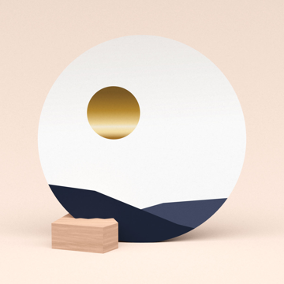
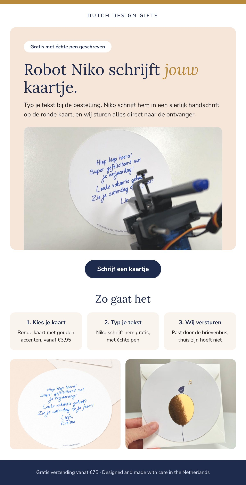
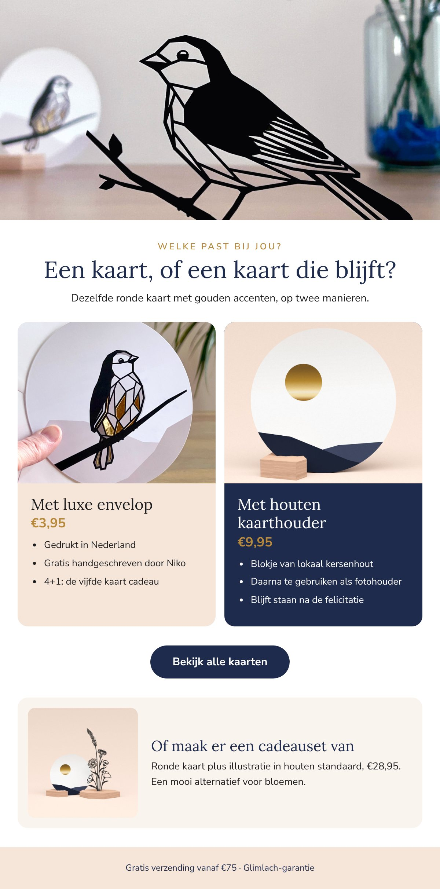

Voorbeelden voor Dutch Design Gifts
Vijf redenen om een ronde kaart te sturen.
Vijf advertenties en twee nieuwsbrieven, gemaakt met jullie eigen foto's en productinformatie. Een idee van Issey Kooijmans van Digital Essence; niets hiervan is gepubliceerd.
Hoi Harry en Katrien, jullie ronde kaarten met gouden accenten, het kersenhouten blokje en robot Niko die met échte pen schrijft vallen meteen op. Daar heb ik vijf advertenties en twee nieuwsbrieven omheen gemaakt, met jullie eigen foto's. Niets is gepubliceerd. Past het niet, zeg het gerust.
Eerst even uitgelegd
Wat is een invalshoek?
Een invalshoek is de reden waarom iemand iets koopt. Dezelfde kaart kun je op heel veel manieren verkopen, omdat niet iedereen om dezelfde reden koopt.
Dezelfde kaart, vijf verschillende redenen om hem te kopen. Elke reden wordt een eigen advertentie.

- 01Zoekvraag → antwoord"Wat stuur ik iemand als ik er niet heen kan?"
- 02Varianten"Hebben ze ook iets voor mijn gelegenheid?"
- 03Kenmerken"Waarom zou ik meer betalen dan voor een gewone kaart?"
- 04Bewijs"Is het in het echt net zo mooi als op de foto?"
- 05Een goede deal"Als ik toch bestel, kan ik er dan meer meenemen?"
We testen die invalshoeken naast elkaar. Na een paar dagen zie je welke het meest verkoopt. Daar maken we er meer van, en wat niet werkt, gaat eruit.
Zo werk ik
Van eerste blik tot bestelling.
Niet iedereen die een advertentie ziet, is meteen klaar om te kopen. Daarom maak ik voor elke stap andere advertenties. Zo spreek je iedereen aan op het moment waar hij of zij zit.
- Stap 1 · Top of funnel
Kennismaken
Mensen die Dutch Design Gifts nog nooit hebben gezien.
Doel: dat ze stoppen met scrollen en nieuwsgierig worden.
Zoals een etalage: je loopt langs en kijkt even naar binnen.
- Stap 2 · Middle of funnel
Overtuigen
Mensen die jullie al eens zagen, maar nog twijfelen.
Doel: hun vragen beantwoorden. Wat is het, waarom dit en niet iets anders?
Zoals een verkoper die rustig uitlegt wat het verschil is.
- Stap 3 · Bottom of funnel
Kopen
Mensen die bijna willen bestellen.
Doel: het laatste duwtje, zoals een aanbod, reviews of de zekerheid van gratis retour.
Zoals de kassa: duidelijk, makkelijk en zonder risico.
Wat ik zag: in de advertentiebibliotheek van Meta vond ik geen advertenties van Dutch Design Gifts. Er is dus nog geen vaste stroom van kennismaken naar kopen, terwijl jullie met de 4+1-actie en 94 reviews al een sterk laatste duwtje hebben.
Advertenties · 9:16
Vijf advertenties, verdeeld over de stappen.
Tik op een advertentie om hem groot te bekijken.
Voor mensen die Dutch Design Gifts nog niet kennen.
Voor mensen die jullie kennen, maar nog twijfelen.
Voor wie bijna bestelt.
Waarom advertenties
Zo groeien kaarten- en cadeaumerken op Instagram.
Een kaart of brievenbuscadeau koop je op het moment dat er iets te vieren of te troosten valt. Wie dan al eens jullie ronde kaart voorbij heeft zien komen, denkt aan jullie. Advertenties voor elke stap zorgen dat jullie dat moment niet missen, en een welkomstmail maakt van de 10%-inschrijving een eerste bestelling.
Aantal advertenties: Meta Advertentiebibliotheek, 26-11-2026.
Nieuwsbrief 1 van 2 · Productspotlight
Robot Niko schrijft jouw kaartje.
Niko is iets wat bijna niemand anders heeft. Deze mail zet hem in de hoofdrol: hoe het werkt in drie stappen, met jullie eigen foto's van de robot en een handgeschreven kaart.
- Perzik kaart met claimpil 'Gratis met échte pen geschreven' en jullie foto van Niko aan het werk
- Drie stappen: kies je kaart, typ je tekst, wij versturen door de brievenbus
- Twee foto's van handgeschreven kaarten en een knop 'Schrijf een kaartje'

Nieuwsbrief 2 van 2 · Vergelijking
Een kaart, of een kaart die blijft?
Een mail die de twee varianten naast elkaar zet: de ronde kaart met luxe envelop (€3,95) en met houten kaarthouder (€9,95). Zo kiest de lezer zelf en zie je vaker de duurdere variant.
- Hero met jullie foto van de mus in houten standaard
- Twee kolommen: met envelop €3,95 en met kaarthouder €9,95, elk met drie echte kenmerken
- Afsluiting met de cadeauset van €28,95 als alternatief voor bloemen

Ritme
Zo kan een week eruitzien.
Dit is een voorbeeld, geen vast pakket. De kracht zit in het ritme: regelmatig nieuwe invalshoeken testen in elke stap, en je nieuwsbrief vast versturen. Wat werkt, doen we vaker.
- MaNieuwe advertenties liveNieuwe invalshoeken in elke stap tegelijk testen.
- DiMeekijkenWelke invalshoek pakt de doelgroep op?
- WoBijsturenBudget naar wat werkt, de rest eruit.
- DoNieuwsbrief verstuurdVast moment, zodat lezers erop gaan rekenen.
- VrKorte updateWat werkte en wat we volgende week doen.
Benieuwd hoe dit voor Dutch Design Gifts werkt?
Een kwartiertje bellen is genoeg om te kijken of het past. Geen verplichtingen.